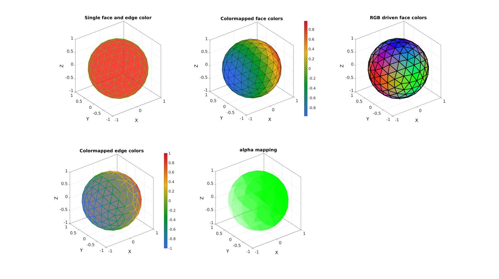
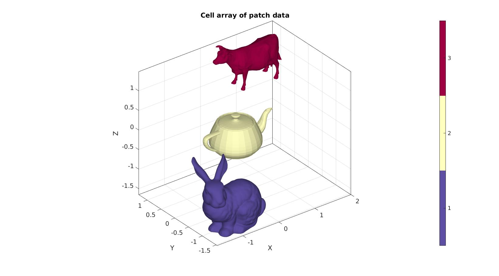
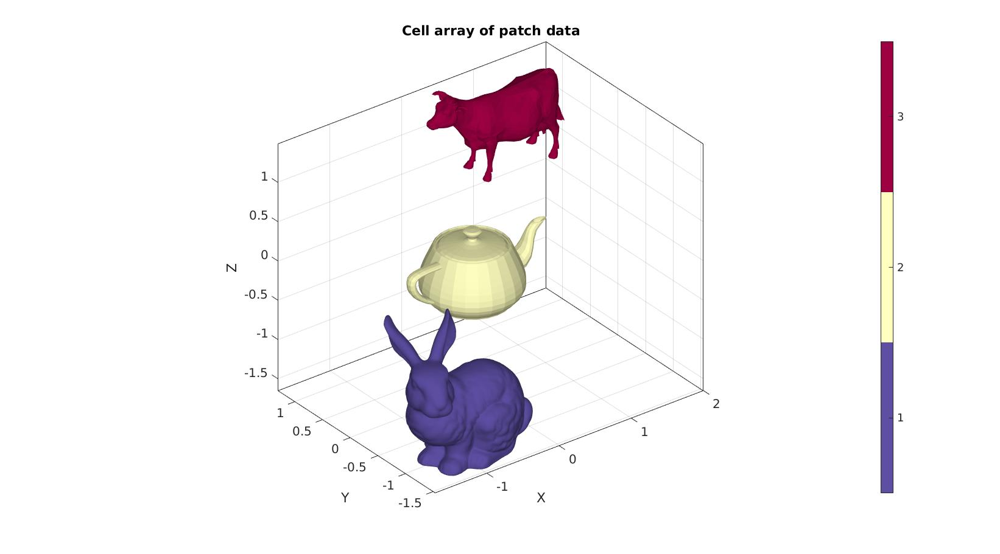

gpatch
Below is a demonstration of the features of the gpatch function
Contents
clear; close all; clc;
Syntax
[hp]=gpatch(F,V,C,CE,A,L);
Description
This function is a short-hand version of the patch command. The inputs for gpatch are the faces (F), the vertices (V), the color description (C), the edge color description CE, the transparancy (A), and the edge width (L). The color data descriptions C (or equivalently CE for edges) can be: 1) A string such as 'g' for green 2) A triplet of RGD values e.g. [1 0 0] is blue 3) A nx1 or a mx1 array of colormapped colors (where n=size(F,1) or m=size(V,1)) 4) (simiarl to 3) A nx3 or a mx3 RGB color value array for the faces or vertices respectively.
Examples
Create example mesh data
[F,V,~]=geoSphere(2,1); %Faces and vertices CV=V(:,1); %Color information for vertices CF=vertexToFaceMeasure(F,CV); %Color information for faces CF_rgb=abs(vertexToFaceMeasure(F,V)); %Color information for faces
Example: Introduction to using gpatch for mesh visualization
The below visualization show the syntax require using patch and gpatch. Essentially gpatch is just a short-hand version of patch allowing for quick and easy visualization using patch graphics.
Using patch graphics in MATLAB see documentation on patch for more information
cFigure; subplot(2,3,1); title('Single face and edge color'); patch('Faces',F,'Vertices',V,'FaceColor','r','EdgeColor','g','FaceAlpha',0.5); axisGeom; subplot(2,3,2); title('Colormapped face colors'); patch('Faces',F,'Vertices',V,'FaceColor','flat','CData',CF,'EdgeColor','k','FaceAlpha',1); colormap gjet; colorbar; axisGeom; subplot(2,3,3); title('RGB driven face colors'); patch('Faces',F,'Vertices',V,'FaceColor','flat','FaceVertexCData',CF_rgb,'EdgeColor','k','FaceAlpha',1,'LineWidth',3); axisGeom; subplot(2,3,4); title('Colormapped edge colors'); patch('Faces',F,'Vertices',V,'FaceColor',grayColor(0.5),'EdgeColor','flat','CData',CV,'LineWidth',3); colormap gjet; colorbar; axisGeom; subplot(2,3,5); title('alpha mapping'); patch('Faces',F,'Vertices',V,'FaceColor','g','FaceVertexAlphaData',CV,'EdgeColor','none','FaceAlpha','flat'); axisGeom; drawnow; % Using |gpatch| shorthand alternative to |patch| cFigure; subplot(2,3,1); title('Single face and edge color'); gpatch(F,V,'r','g',0.5); axisGeom; subplot(2,3,2); title('Colormapped face colors'); gpatch(F,V,CF); colormap gjet; colorbar; axisGeom; subplot(2,3,3); title('RGB driven face colors'); gpatch(F,V,CF_rgb,'k',1,3); axisGeom; subplot(2,3,4); title('Colormapped edge colors'); gpatch(F,V,'kw',CV,1,3); %kw -> grayColor(0.5) colormap gjet; colorbar; axisGeom; subplot(2,3,5); title('alpha mapping'); gpatch(F,V,'g','none',CV); axisGeom; drawnow;
Using gpatch with cell arrays containing patch data
Use of gpatch when both the faces and vertices are stored in a cell array
% Create example cell arrays [F1,V1]=graphicsModels(1); V1=V1-mean(V1,1); V1=V1./max(V1(:)); V1=V1-1; [F2,V2]=graphicsModels(2); V2=V2-mean(V2,1); V2=V2./max(V2(:)); [F3,V3]=graphicsModels(3); V3=V3-mean(V3,1); V3=V3./max(V3(:)); V3=V3+1; F={F1,F2,F3}; %Cell array containing faces V={V1,V2,V3}; %Cell array containing vertices C={ones(size(F1,1),1),2*ones(size(F2,1),1),3*ones(size(F3,1),1)}; %Cell array containing color labels cFigure; title('Cell array of patch data'); hp=gpatch(F,V,C,'none',1); axisGeom; camlight headlight; colormap spectral; icolorbar; drawnow;
 
 Use of gpatch when only the faces are stored in a cell array
% Create example cell array [F1,V1]=graphicsModels(1); V1=V1-mean(V1,1); V1=V1./max(V1(:)); V1=V1-1; [F2,V2]=graphicsModels(2); V2=V2-mean(V2,1); V2=V2./max(V2(:)); [F3,V3]=graphicsModels(3); V3=V3-mean(V3,1); V3=V3./max(V3(:)); V3=V3+1; F={F1,F2+size(V1,1),F3+size(V1,1)+size(V2,1)}; %Cell array containing faces V=[V1;V2;V3]; %Normal array containing all vertices C={ones(size(F1,1),1),2*ones(size(F2,1),1),3*ones(size(F3,1),1)}; %Cell array containing color labels cFigure; title('Cell array of patch data'); hp=gpatch(F,V,C,'none',1); axisGeom; camlight headlight; colormap spectral; icolorbar; drawnow;


GIBBON www.gibboncode.org
Kevin Mattheus Moerman, gibbon.toolbox@gmail.com
GIBBON footer text
License: https://github.com/gibbonCode/GIBBON/blob/master/LICENSE
GIBBON: The Geometry and Image-based Bioengineering add-On. A toolbox for image segmentation, image-based modeling, meshing, and finite element analysis.
Copyright (C) 2006-2022 Kevin Mattheus Moerman and the GIBBON contributors
This program is free software: you can redistribute it and/or modify it under the terms of the GNU General Public License as published by the Free Software Foundation, either version 3 of the License, or (at your option) any later version.
This program is distributed in the hope that it will be useful, but WITHOUT ANY WARRANTY; without even the implied warranty of MERCHANTABILITY or FITNESS FOR A PARTICULAR PURPOSE. See the GNU General Public License for more details.
You should have received a copy of the GNU General Public License along with this program. If not, see http://www.gnu.org/licenses/.